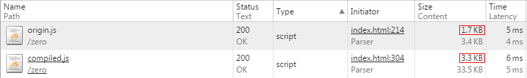

Poof.js —— Unicode隐藏式加密(仅支持UTF-8编码)
原字符串
alert('HELLO WORLD!\r\n世界，你好！');
数据
隐藏字符 (隐藏字符串被包裹在双引号内)
原字符串长度
隐藏字符长度
数据转换比率
编译代码转换比率
解码校验结果
在开启GZIP对js进行压缩传输时，编译后的js文件传输数据量大约为源文件的
两倍

编译结果
执行js
编译选项
基础编译
解码分解
多重分解
伪装分解
下面这些注意事项可以增加js文件的安全性
永远不要把你所有的js代码加密！
应只加密一些核心流程与敏感数据，或者一些植入监控程序，并且把分解后的代码块隐藏在整个的各个角落
WHY?
编译生成的代码需要在
局部变量作用域
内调用，并
使用混淆压缩
增加破解难度
加密是使用UTF-8中的一些特殊字符实现，其他编码格式无法加密
加密可破解，只能通过分开放置各部分解密代码的方式增加破解难度
加密后的js文件在服务器端输出的时候最好能携带编码头Content-Tpe: application/javascript;
charset=utf-8
。
WHY?